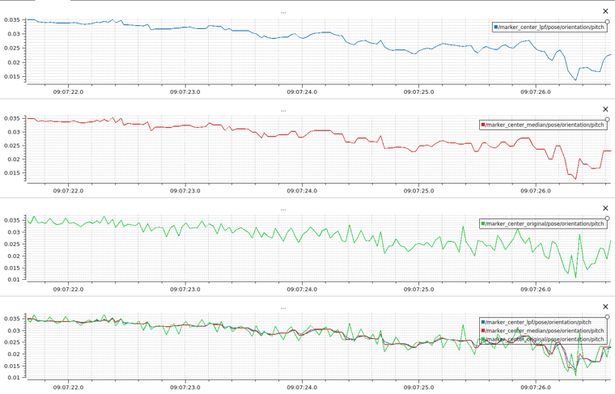
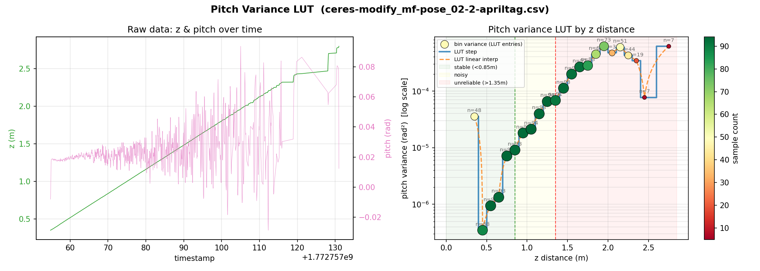
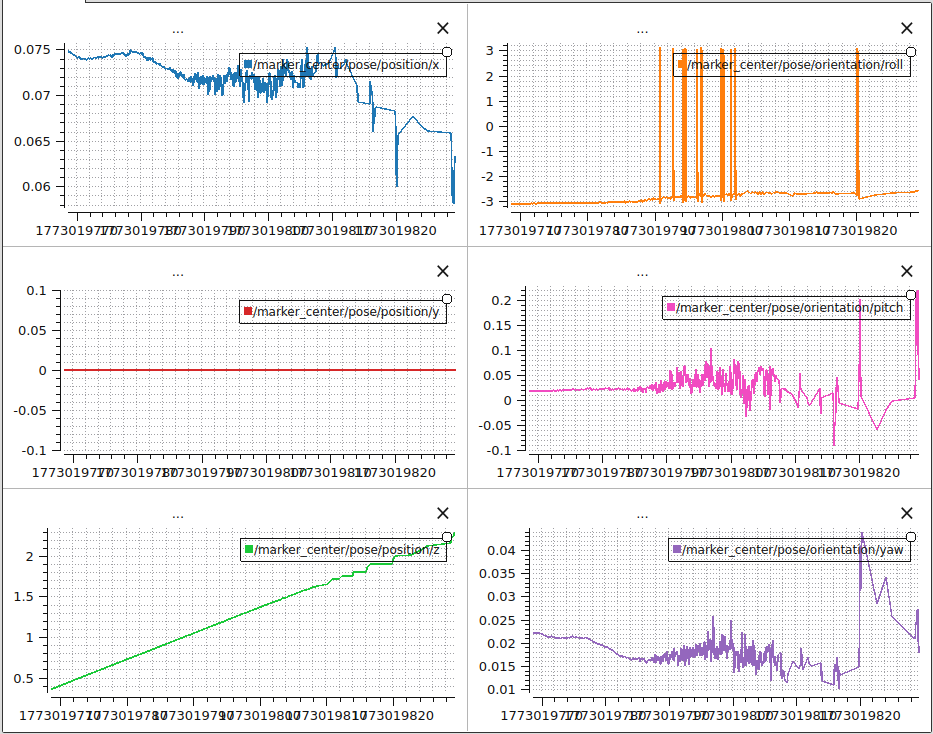
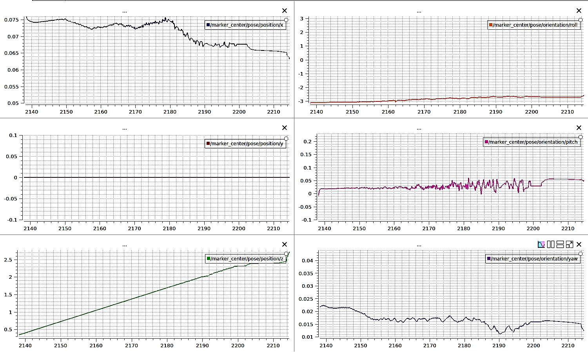
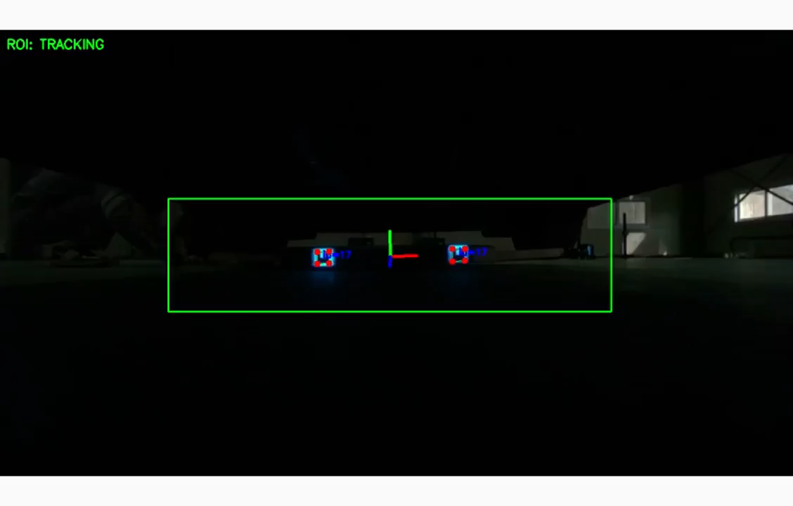
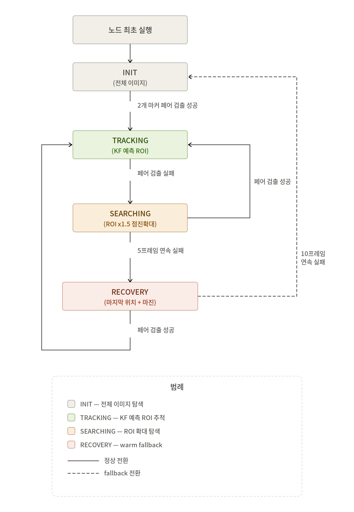

듀얼 마커 기반
상대 자세 추정 시스템 개선
재직 중인 회사의 프로젝트입니다. 보안을 위해 제품·고객·운용 환경 정보는 제외하고, 문제 해결 과정과 기술적 판단 중심으로 정리했습니다. 입사 직후 인수인계받아 현재는 제가 전담하는 파트이며, 개선한 코드가 실제 운용 중인 로봇에 탑재되어 있습니다.
- 두 대의 로봇이 한 세트로 협조 주행하는 시스템에서, 후방 카메라와 듀얼 ArUco 마커로 상대 로봇의 6-DOF 자세를 추정하는 파이프라인 전체를 개선했습니다.
- Part 1 — 자세 추정 안정화: 사실상 동작하지 않던 필터의 구조적 결함을 찾아 Ceres 비선형 최적화와 쿼터니언 필터링으로 재설계 → pitch 노이즈 59% 감소, 2° 이상 튀는 프레임 완전 소거
- Part 2 — 검출·연산 최적화: 장축 차량 원거리 미검출을 해결하며 늘어난 연산 비용을 Kalman 기반 Dynamic ROI로 되돌림 → 주행 중 검출 약 17배, 처리 시간 50% 단축
PART 1자세 추정 안정화 — 필터가 있는데 왜 떨리는가
기존 코드에는 LPF(저역통과필터)와 Median Filter가 있었지만 출력은 원본과 거의 동일하게 떨렸습니다. 코드를 추적해 보니 LPF가 매 프레임 재초기화되어 이전 상태를 전혀 기억하지 못했고, cutoff 주파수가 100Hz로 설정되어 보간 계수가 1에 수렴 — 필터를 통과해도 값이 그대로였습니다. 또한 마커와의 거리(z)가 멀어질수록 pitch 분산이 커지고, 에러 상황에서는 2° 이상 튀는 프레임이 48건 발생했습니다.

필터링 파이프라인 재설계
- LPF 반복 초기화 버그 수정, cutoff 주파수 100Hz → 5Hz 재설정 (주파수별 정량 비교로 결정)
- 오일러 각 대신 Quaternion 부호 모호성을 처리한 SLERP 기반 LPF 적용
- Quaternion median 산출을 Geodesic Medoid에서 Weiszfeld's algorithm으로 교체
- One Euro Filter로 변화율에 따라 강도가 적응하는 필터링 추가
- 거리(z)별 pitch 분산을 모델링(LUT)해 거리 적응형 필터 설계의 근거로 사용

Ceres 기반 Pose 추정 재구현
OpenCV solvePnP를 그대로 쓰는 대신, Ceres Solver로 재투영 오차를 직접 최소화하는 구조로 재구현했습니다. Huber loss로 outlier 코너의 영향을 줄이고, Quaternion Manifold 위에서 최적화해 회전 파라미터의 특이점을 피했으며, 시스템 기구 특성상 제한되는 roll/yaw에는 soft constraint를 걸었습니다. 개선안을 하나씩 켜고 끈 6개 버전 조합을 동일한 rosbag 데이터로 재생하며 pitch 표준편차·변동 범위, z 표준편차, gap·jump 건수로 정량 비교해 최종 조합을 선정했습니다.


0.610° → 0.248°
1.982° → 1.158°
완전 소거
3.16° → 1.46°
PART 2검출·연산 최적화 — 검출을 올리면 비용이 오른다
휠베이스가 긴 차종에서는 마커와 카메라 사이 거리가 멀어져 원거리에서 검출이 실패했고, 주행 중 검출률이 5.8% 수준이었습니다. 정밀한 코너 정제(APRILTAG refinement)를 켜면 검출은 살아나지만 처리 시간이 약 5배로 늘었고, 검출 노드 2개가 상시 실행되면서 온보드 컴퓨터의 CPU 부하가 가중되었습니다. 검출 성능과 실시간성을 동시에 만족시키는 것이 과제였습니다.
검출 성능 — 전처리·정제 조합의 정량 비교
- ROI 영역 Sharpening 전처리로 원거리 마커의 과검출·미검출 개선
- cornerRefinement(NONE·SUBPIX·APRILTAG) × 전처리 조합 12개 케이스를 동일 데이터로 정량 비교해 최적 조합 선정
- 비교 과정에서 발견한 OpenCV APRILTAG 모드의 무한루프 이슈를 분석하고 라이브러리 버전 업그레이드로 해결
연산 비용 — Dynamic ROI와 실행 조건 제어
전체 이미지가 아니라 마커가 있을 위치만 검출하도록, Kalman Filter로 마커 중심을 추적하는 Dynamic ROI를 설계했습니다. INIT · TRACKING · SEARCHING · RECOVERY의 4-state 구조로, 추적을 놓치면 탐색 범위를 점진 확장하고 일정 시간 실패 시 전체 탐색으로 복귀하는 fallback 경로를 두었습니다. 또한 주행 모드 flag에 따라 검출 노드를 필요할 때만 활성화해 상시 실행 부하를 제거했습니다.


실제 운용 조건을 모사하기 위해 stress-ng로 CPU 부하를 건 상태를 포함해, 처리 시간의 Mean뿐 아니라 P95·P99 tail latency까지 분석했습니다. 평균만 보면 놓치는 간헐적 지연 스파이크가 실시간 제어에는 치명적이기 때문입니다.
31건 → 534건
(refinement 강화 상태 기준)
z 표준편차
(과검출 구간)
- 입사 직후 코드를 인수인계받아 결함 분석부터 재설계·현장 검증까지 주도 — 현재 이 파트의 전담 개발자
- 개선 코드는 릴리즈를 거쳐 실제 운용 중인 로봇에 탑재되어 동작하고 있습니다